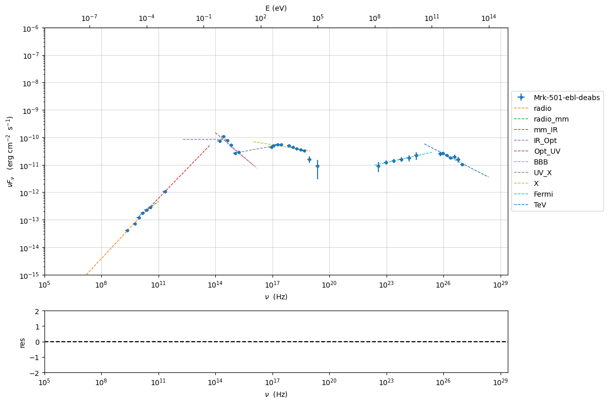

Model fitting 2: SSC + galaxy template¶
import warnings
warnings.filterwarnings('ignore')
import matplotlib.pylab as plt
import jetset
from jetset.test_data_helper import test_SEDs
from jetset.data_loader import ObsData,Data
from jetset.plot_sedfit import PlotSED
from jetset.test_data_helper import test_SEDs
print(jetset.__version__)
1.2.0rc6
test_SEDs
['/Users/orion/anaconda3/envs/jetset/lib/python3.8/site-packages/jetset/test_data/SEDs_data/SED_3C345.ecsv',
'/Users/orion/anaconda3/envs/jetset/lib/python3.8/site-packages/jetset/test_data/SEDs_data/SED_MW_Mrk421_EBL_DEABS.ecsv',
'/Users/orion/anaconda3/envs/jetset/lib/python3.8/site-packages/jetset/test_data/SEDs_data/SED_MW_Mrk501_EBL_ABS.ecsv',
'/Users/orion/anaconda3/envs/jetset/lib/python3.8/site-packages/jetset/test_data/SEDs_data/SED_MW_Mrk501_EBL_DEABS.ecsv']
Loading data¶
see the data_format user guide for further information about loading data
data=Data.from_file(test_SEDs[3])
%matplotlib inline
sed_data=ObsData(data_table=data)
sed_data.group_data(bin_width=0.2)
sed_data.add_systematics(0.1,[10.**6,10.**29])
p=sed_data.plot_sed()
================================================================================ * binning data * ---> N bins= 90 ---> bin_widht= 0.2 ================================================================================

sed_data.save('Mrk_501.pkl')
Phenomenological model constraining¶
see the Phenomenological model constraining: application user guide for further information about loading data
Spectral indices¶
from jetset.sed_shaper import SEDShape
my_shape=SEDShape(sed_data)
my_shape.eval_indices(silent=True)
p=my_shape.plot_indices()
p.rescale(y_min=-15,y_max=-6)
================================================================================ * evaluating spectral indices for data * ================================================================================
Sed shaper¶
mm,best_fit=my_shape.sync_fit(check_host_gal_template=True,
Ep_start=None,
minimizer='lsb',
silent=True,
fit_range=[10. , 21.])
================================================================================ * Log-Polynomial fitting of the synchrotron component * ---> first blind fit run, fit range: [10.0, 21.0] ---> class: HSP ---> class: HSPTable length=6
| model name | name | val | bestfit val | err + | err - | start val | fit range min | fit range max | frozen |
|---|---|---|---|---|---|---|---|---|---|
| LogCubic | b | -6.411144e-02 | -6.411144e-02 | 7.838965e-03 | -- | -4.778764e-02 | -1.000000e+01 | 0.000000e+00 | False |
| LogCubic | c | -1.751721e-03 | -1.751721e-03 | 1.127030e-03 | -- | 3.576201e-03 | -1.000000e+01 | 1.000000e+01 | False |
| LogCubic | Ep | 1.703747e+01 | 1.703747e+01 | 9.437354e-02 | -- | 1.626870e+01 | 0.000000e+00 | 3.000000e+01 | False |
| LogCubic | Sp | -1.030068e+01 | -1.030068e+01 | 1.884114e-02 | -- | -1.025412e+01 | -3.000000e+01 | 0.000000e+00 | False |
| host_galaxy | nuFnu_p_host | -1.006557e+01 | -1.006557e+01 | 5.462528e-02 | -- | -1.025412e+01 | -1.225412e+01 | -8.254123e+00 | False |
| host_galaxy | nu_scale | 1.730764e-02 | 1.730764e-02 | 3.694887e-03 | -- | 0.000000e+00 | -5.000000e-01 | 5.000000e-01 | False |
---> sync nu_p=+1.703747e+01 (err=+9.437354e-02) nuFnu_p=-1.030068e+01 (err=+1.884114e-02) curv.=-6.411144e-02 (err=+7.838965e-03)
================================================================================
my_shape.IC_fit(fit_range=[23., 29.],minimizer='minuit',silent=True)
p=my_shape.plot_shape_fit()
p.rescale(y_min=-15)
================================================================================ * Log-Polynomial fitting of the IC component * ---> fit range: [23.0, 29.0] ---> LogCubic fitTable length=4
| model name | name | val | bestfit val | err + | err - | start val | fit range min | fit range max | frozen |
|---|---|---|---|---|---|---|---|---|---|
| LogCubic | b | -1.310993e-01 | -1.310993e-01 | 3.244183e-02 | -- | -1.000000e+00 | -1.000000e+01 | 0.000000e+00 | False |
| LogCubic | c | -3.300446e-02 | -3.300446e-02 | 2.072517e-02 | -- | -1.000000e+00 | -1.000000e+01 | 1.000000e+01 | False |
| LogCubic | Ep | 2.549603e+01 | 2.549603e+01 | 2.235468e-01 | -- | 2.556357e+01 | 0.000000e+00 | 3.000000e+01 | False |
| LogCubic | Sp | -1.057945e+01 | -1.057945e+01 | 4.332976e-02 | -- | -1.000000e+01 | -3.000000e+01 | 0.000000e+00 | False |
---> IC nu_p=+2.549603e+01 (err=+2.235468e-01) nuFnu_p=-1.057945e+01 (err=+4.332976e-02) curv.=-1.310993e-01 (err=+3.244183e-02)
================================================================================
Model constraining¶
In this step we are not fitting the model, we are just obtaining the
phenomenological pre_fit model, that will be fitted in using minuit
ore least-square bound, as shown below
from jetset.obs_constrain import ObsConstrain
from jetset.model_manager import FitModel
from jetset.minimizer import fit_SED
sed_obspar=ObsConstrain(beaming=25,
B_range=[0.001,0.1],
distr_e='lppl',
t_var_sec=3*86400,
nu_cut_IR=1E11,
SEDShape=my_shape)
prefit_jet=sed_obspar.constrain_SSC_model(electron_distribution_log_values=False,silent=True)
prefit_jet.save_model('prefit_jet_gal_templ.pkl')
================================================================================ * constrains parameters from observable *Table length=11
| model name | name | par type | units | val | phys. bound. min | phys. bound. max | log | frozen |
|---|---|---|---|---|---|---|---|---|
| jet_leptonic | R | region_size | cm | 1.046425e+16 | 1.000000e+03 | 1.000000e+30 | False | False |
| jet_leptonic | R_H | region_position | cm | 1.000000e+17 | 0.000000e+00 | -- | False | True |
| jet_leptonic | B | magnetic_field | gauss | 5.050000e-02 | 0.000000e+00 | -- | False | False |
| jet_leptonic | beam_obj | beaming | lorentz-factor* | 2.500000e+01 | 1.000000e-04 | -- | False | False |
| jet_leptonic | z_cosm | redshift | 3.360000e-02 | 0.000000e+00 | -- | False | False | |
| jet_leptonic | gmin | low-energy-cut-off | lorentz-factor* | 1.487509e+02 | 1.000000e+00 | 1.000000e+09 | False | False |
| jet_leptonic | gmax | high-energy-cut-off | lorentz-factor* | 2.310708e+06 | 1.000000e+00 | 1.000000e+15 | False | False |
| jet_leptonic | N | emitters_density | 1 / cm3 | 3.082278e+01 | 0.000000e+00 | -- | False | False |
| jet_leptonic | gamma0_log_parab | turn-over-energy | lorentz-factor* | 1.045843e+04 | 1.000000e+00 | 1.000000e+09 | False | False |
| jet_leptonic | s | LE_spectral_slope | 2.248787e+00 | -1.000000e+01 | 1.000000e+01 | False | False | |
| jet_leptonic | r | spectral_curvature | 3.205572e-01 | -1.500000e+01 | 1.500000e+01 | False | False |
================================================================================
pl=prefit_jet.plot_model(sed_data=sed_data)
pl.add_residual_plot(prefit_jet,sed_data)
pl.rescale(y_min=-15,x_min=7,x_max=29)
Model fitting¶
We remind that we can use different minimizers for the model fitting. In the following we will use the minuit minimizer and the lsb (least square bound scipy minimizer). Using minuit we notice that sometimes the fit will converge, but the quality will not be enough (valid==false) to run minos. Anyhow, as shown in the MCMC sampling, it still possible to estimate asymmetric errors by means of MCMC sampling
We freeze some parameters, and we also set some fit_range values. Setting fit_range can speed-up the fit convergence but should be judged by the user each time according to the physics of the particular source.
When using minuit the best strategy is to set the fit_range for most of the free parameters
A good strategy is to run first a lsb fit and then, using the same fit_model, run a fit with minuit
Note
With the new implementation of composite model (FitModel class) to set parameters you have to specify the model component, this is different from versions<1.1.2, and this holds also for the freeze method and for setting fit_range intervals, and for the methods relate to parameters setting in general. See the Composite Models and depending pars user guide for further information about the new implementation of FitModel, in particular for parameter setting
Model fitting with LSB¶
see the Composite Models and depending pars user guide for further information about the new implementation of FitModel, in particular for parameter setting
from jetset.model_manager import FitModel
from jetset.jet_model import Jet
jet_lsb=Jet.load_model('prefit_jet_gal_templ.pkl')
jet_lsb.set_gamma_grid_size(200)
| model name | name | par type | units | val | phys. bound. min | phys. bound. max | log | frozen |
|---|---|---|---|---|---|---|---|---|
| jet_leptonic | gmin | low-energy-cut-off | lorentz-factor* | 1.487509e+02 | 1.000000e+00 | 1.000000e+09 | False | False |
| jet_leptonic | gmax | high-energy-cut-off | lorentz-factor* | 2.310708e+06 | 1.000000e+00 | 1.000000e+15 | False | False |
| jet_leptonic | N | emitters_density | 1 / cm3 | 3.082278e+01 | 0.000000e+00 | -- | False | False |
| jet_leptonic | gamma0_log_parab | turn-over-energy | lorentz-factor* | 1.045843e+04 | 1.000000e+00 | 1.000000e+09 | False | False |
| jet_leptonic | s | LE_spectral_slope | 2.248787e+00 | -1.000000e+01 | 1.000000e+01 | False | False | |
| jet_leptonic | r | spectral_curvature | 3.205572e-01 | -1.500000e+01 | 1.500000e+01 | False | False | |
| jet_leptonic | R | region_size | cm | 1.046425e+16 | 1.000000e+03 | 1.000000e+30 | False | False |
| jet_leptonic | R_H | region_position | cm | 1.000000e+17 | 0.000000e+00 | -- | False | True |
| jet_leptonic | B | magnetic_field | gauss | 5.050000e-02 | 0.000000e+00 | -- | False | False |
| jet_leptonic | beam_obj | beaming | lorentz-factor* | 2.500000e+01 | 1.000000e-04 | -- | False | False |
| jet_leptonic | z_cosm | redshift | 3.360000e-02 | 0.000000e+00 | -- | False | False |
fit_model_lsb=FitModel( jet=jet_lsb, name='SSC-best-fit-lsb',template=my_shape.host_gal)
fit_model_lsb.show_model()
--------------------------------------------------------------------------------
Composite model description
--------------------------------------------------------------------------------
name: SSC-best-fit-lsb
type: composite_model
components models:
-model name: jet_leptonic model type: jet
-model name: host_galaxy model type: template
--------------------------------------------------------------------------------
individual component description
--------------------------------------------------------------------------------
jet model description
--------------------------------------------------------------------------------
name: jet_leptonic
electrons distribution:
type: lppl
gamma energy grid size: 201
gmin grid : 1.487509e+02
gmax grid : 2.310708e+06
normalization True
log-values False
radiative fields:
seed photons grid size: 100
IC emission grid size: 100
source emissivity lower bound : 1.000000e-120
spectral components:
name:Sum, state: on
name:Sync, state: self-abs
name:SSC, state: on
external fields transformation method: blob
SED info:
nu grid size jetkernel: 1000
nu grid size: 500
nu mix (Hz): 1.000000e+06
nu max (Hz): 1.000000e+30
flux plot lower bound : 1.000000e-120
--------------------------------------------------------------------------------
| model name | name | par type | units | val | phys. bound. min | phys. bound. max | log | frozen |
|---|---|---|---|---|---|---|---|---|
| jet_leptonic | gmin | low-energy-cut-off | lorentz-factor* | 1.487509e+02 | 1.000000e+00 | 1.000000e+09 | False | False |
| jet_leptonic | gmax | high-energy-cut-off | lorentz-factor* | 2.310708e+06 | 1.000000e+00 | 1.000000e+15 | False | False |
| jet_leptonic | N | emitters_density | 1 / cm3 | 3.082278e+01 | 0.000000e+00 | -- | False | False |
| jet_leptonic | gamma0_log_parab | turn-over-energy | lorentz-factor* | 1.045843e+04 | 1.000000e+00 | 1.000000e+09 | False | False |
| jet_leptonic | s | LE_spectral_slope | 2.248787e+00 | -1.000000e+01 | 1.000000e+01 | False | False | |
| jet_leptonic | r | spectral_curvature | 3.205572e-01 | -1.500000e+01 | 1.500000e+01 | False | False | |
| jet_leptonic | R | region_size | cm | 1.046425e+16 | 1.000000e+03 | 1.000000e+30 | False | False |
| jet_leptonic | R_H | region_position | cm | 1.000000e+17 | 0.000000e+00 | -- | False | True |
| jet_leptonic | B | magnetic_field | gauss | 5.050000e-02 | 0.000000e+00 | -- | False | False |
| jet_leptonic | beam_obj | beaming | lorentz-factor* | 2.500000e+01 | 1.000000e-04 | -- | False | False |
| jet_leptonic | z_cosm | redshift | 3.360000e-02 | 0.000000e+00 | -- | False | False |
--------------------------------------------------------------------------------
--------------------------------------------------------------------------------
model description
--------------------------------------------------------------------------------
name: host_galaxy
type: template
--------------------------------------------------------------------------------
| model name | name | par type | units | val | phys. bound. min | phys. bound. max | log | frozen |
|---|---|---|---|---|---|---|---|---|
| host_galaxy | nuFnu_p_host | nuFnu-scale | erg / (cm2 s) | -1.006557e+01 | -2.000000e+01 | 2.000000e+01 | False | False |
| host_galaxy | nu_scale | nu-scale | Hz | 1.730764e-02 | -2.000000e+00 | 2.000000e+00 | False | False |
--------------------------------------------------------------------------------
--------------------------------------------------------------------------------
Note
Since the jet_leptonic to model has to be summed to the host_galaxy model, we do not need to define the functional form for the composite model, because the default compostion is the sum of all the components (see the Composite Models and depending pars user guide for further information about the new implementation of FitModel, in particular for parameter setting). Anyhow, we show here the definition of the model composition for purpose of clarity
fit_model_lsb.composite_expr='jet_leptonic + host_galaxy '
fit_model_lsb.freeze('jet_leptonic','z_cosm')
fit_model_lsb.freeze('jet_leptonic','R_H')
fit_model_lsb.jet_leptonic.parameters.beam_obj.fit_range=[5., 50.]
fit_model_lsb.jet_leptonic.parameters.R.fit_range=[10**15.5,10**17.5]
fit_model_lsb.jet_leptonic.parameters.gmax.fit_range=[1E4,1E8]
fit_model_lsb.host_galaxy.parameters.nuFnu_p_host.frozen=False
fit_model_lsb.host_galaxy.parameters.nu_scale.frozen=True
from jetset.minimizer import fit_SED,ModelMinimizer
model_minimizer_lsb=ModelMinimizer('lsb')
best_fit_lsb=model_minimizer_lsb.fit(fit_model_lsb,sed_data,10.0**11,10**29.0,fitname='SSC-best-fit-lsb',repeat=3)
filtering data in fit range = [1.000000e+11,1.000000e+29] data length 31 ================================================================================ * start fit process * ----- fit run: 0
0it [00:00, ?it/s]
- best chisq=8.40986e+00
fit run: 1
- old chisq=8.40986e+00
0it [00:00, ?it/s]
- best chisq=8.33083e+00
fit run: 2
- old chisq=8.33083e+00
0it [00:00, ?it/s]
- best chisq=8.30769e+00
-------------------------------------------------------------------------
Fit report
Model: SSC-best-fit-lsb
| model name | name | par type | units | val | phys. bound. min | phys. bound. max | log | frozen |
|---|---|---|---|---|---|---|---|---|
| jet_leptonic | gmin | low-energy-cut-off | lorentz-factor* | 9.629577e+01 | 1.000000e+00 | 1.000000e+09 | False | False |
| jet_leptonic | gmax | high-energy-cut-off | lorentz-factor* | 2.094901e+06 | 1.000000e+00 | 1.000000e+15 | False | False |
| jet_leptonic | N | emitters_density | 1 / cm3 | 2.649381e+01 | 0.000000e+00 | -- | False | False |
| jet_leptonic | gamma0_log_parab | turn-over-energy | lorentz-factor* | 5.732044e+03 | 1.000000e+00 | 1.000000e+09 | False | False |
| jet_leptonic | s | LE_spectral_slope | 2.179803e+00 | -1.000000e+01 | 1.000000e+01 | False | False | |
| jet_leptonic | r | spectral_curvature | 2.270824e-01 | -1.500000e+01 | 1.500000e+01 | False | False | |
| jet_leptonic | R | region_size | cm | 1.364911e+16 | 1.000000e+03 | 1.000000e+30 | False | False |
| jet_leptonic | R_H | region_position | cm | 1.000000e+17 | 0.000000e+00 | -- | False | True |
| jet_leptonic | B | magnetic_field | gauss | 1.227782e-02 | 0.000000e+00 | -- | False | False |
| jet_leptonic | beam_obj | beaming | lorentz-factor* | 4.391102e+01 | 1.000000e-04 | -- | False | False |
| jet_leptonic | z_cosm | redshift | 3.360000e-02 | 0.000000e+00 | -- | False | True | |
| host_galaxy | nuFnu_p_host | nuFnu-scale | erg / (cm2 s) | -1.005791e+01 | -2.000000e+01 | 2.000000e+01 | False | False |
| host_galaxy | nu_scale | nu-scale | Hz | 1.730764e-02 | -2.000000e+00 | 2.000000e+00 | False | True |
converged=True
calls=41
mesg=
'The relative error between two consecutive iterates is at most 0.000000'
dof=21
chisq=8.307691, chisq/red=0.395604 null hypothesis sig=0.993696
best fit pars
| model name | name | val | bestfit val | err + | err - | start val | fit range min | fit range max | frozen |
|---|---|---|---|---|---|---|---|---|---|
| jet_leptonic | gmin | 9.629577e+01 | 9.629577e+01 | 1.604038e+02 | -- | 1.487509e+02 | 1.000000e+00 | 1.000000e+09 | False |
| jet_leptonic | gmax | 2.094901e+06 | 2.094901e+06 | 9.384097e+05 | -- | 2.310708e+06 | 1.000000e+04 | 1.000000e+08 | False |
| jet_leptonic | N | 2.649381e+01 | 2.649381e+01 | 9.557869e+01 | -- | 3.082278e+01 | 0.000000e+00 | -- | False |
| jet_leptonic | gamma0_log_parab | 5.732044e+03 | 5.732044e+03 | 9.690316e+03 | -- | 1.045843e+04 | 1.000000e+00 | 1.000000e+09 | False |
| jet_leptonic | s | 2.179803e+00 | 2.179803e+00 | 2.636698e-01 | -- | 2.248787e+00 | -1.000000e+01 | 1.000000e+01 | False |
| jet_leptonic | r | 2.270824e-01 | 2.270824e-01 | 4.581071e-02 | -- | 3.205572e-01 | -1.500000e+01 | 1.500000e+01 | False |
| jet_leptonic | R | 1.364911e+16 | 1.364911e+16 | 1.776107e+16 | -- | 1.046425e+16 | 3.162278e+15 | 3.162278e+17 | False |
| jet_leptonic | R_H | 1.000000e+17 | -- | -- | -- | 1.000000e+17 | 0.000000e+00 | -- | True |
| jet_leptonic | B | 1.227782e-02 | 1.227782e-02 | 4.927832e-03 | -- | 5.050000e-02 | 0.000000e+00 | -- | False |
| jet_leptonic | beam_obj | 4.391102e+01 | 4.391102e+01 | 2.478637e+01 | -- | 2.500000e+01 | 5.000000e+00 | 5.000000e+01 | False |
| jet_leptonic | z_cosm | 3.360000e-02 | -- | -- | -- | 3.360000e-02 | 0.000000e+00 | -- | True |
| host_galaxy | nuFnu_p_host | -1.005791e+01 | -1.005791e+01 | 3.298370e-02 | -- | -1.006557e+01 | -1.225412e+01 | -8.254123e+00 | False |
| host_galaxy | nu_scale | 1.730764e-02 | -- | -- | -- | 1.730764e-02 | -5.000000e-01 | 5.000000e-01 | True |
-------------------------------------------------------------------------
================================================================================
best_fit_lsb.save_report('SSC-best-fit-lsb.pkl')
model_minimizer_lsb.save_model('model_minimizer_lsb.pkl')
fit_model_lsb.save_model('fit_model_lsb.pkl')
best_fit_lsb.bestfit_table
| model name | name | val | bestfit val | err + | err - | start val | fit range min | fit range max | frozen |
|---|---|---|---|---|---|---|---|---|---|
| str12 | str16 | float64 | float64 | float64 | float64 | float64 | float64 | float64 | bool |
| jet_leptonic | gmin | 9.629577e+01 | 9.629577e+01 | 1.604038e+02 | -- | 1.487509e+02 | 1.000000e+00 | 1.000000e+09 | False |
| jet_leptonic | gmax | 2.094901e+06 | 2.094901e+06 | 9.384097e+05 | -- | 2.310708e+06 | 1.000000e+04 | 1.000000e+08 | False |
| jet_leptonic | N | 2.649381e+01 | 2.649381e+01 | 9.557869e+01 | -- | 3.082278e+01 | 0.000000e+00 | -- | False |
| jet_leptonic | gamma0_log_parab | 5.732044e+03 | 5.732044e+03 | 9.690316e+03 | -- | 1.045843e+04 | 1.000000e+00 | 1.000000e+09 | False |
| jet_leptonic | s | 2.179803e+00 | 2.179803e+00 | 2.636698e-01 | -- | 2.248787e+00 | -1.000000e+01 | 1.000000e+01 | False |
| jet_leptonic | r | 2.270824e-01 | 2.270824e-01 | 4.581071e-02 | -- | 3.205572e-01 | -1.500000e+01 | 1.500000e+01 | False |
| jet_leptonic | R | 1.364911e+16 | 1.364911e+16 | 1.776107e+16 | -- | 1.046425e+16 | 3.162278e+15 | 3.162278e+17 | False |
| jet_leptonic | R_H | 1.000000e+17 | -- | -- | -- | 1.000000e+17 | 0.000000e+00 | -- | True |
| jet_leptonic | B | 1.227782e-02 | 1.227782e-02 | 4.927832e-03 | -- | 5.050000e-02 | 0.000000e+00 | -- | False |
| jet_leptonic | beam_obj | 4.391102e+01 | 4.391102e+01 | 2.478637e+01 | -- | 2.500000e+01 | 5.000000e+00 | 5.000000e+01 | False |
| jet_leptonic | z_cosm | 3.360000e-02 | -- | -- | -- | 3.360000e-02 | 0.000000e+00 | -- | True |
| host_galaxy | nuFnu_p_host | -1.005791e+01 | -1.005791e+01 | 3.298370e-02 | -- | -1.006557e+01 | -1.225412e+01 | -8.254123e+00 | False |
| host_galaxy | nu_scale | 1.730764e-02 | -- | -- | -- | 1.730764e-02 | -5.000000e-01 | 5.000000e-01 | True |
%matplotlib inline
fit_model_lsb.set_nu_grid(1E6,1E30,200)
fit_model_lsb.eval()
p2=fit_model_lsb.plot_model(sed_data=sed_data)
p2.rescale(y_min=-13,x_min=6,x_max=28.5)

Model fitting with Minuit¶
jet_minuit=Jet.load_model('prefit_jet_gal_templ.pkl')
jet_minuit.set_gamma_grid_size(200)
| model name | name | par type | units | val | phys. bound. min | phys. bound. max | log | frozen |
|---|---|---|---|---|---|---|---|---|
| jet_leptonic | gmin | low-energy-cut-off | lorentz-factor* | 1.487509e+02 | 1.000000e+00 | 1.000000e+09 | False | False |
| jet_leptonic | gmax | high-energy-cut-off | lorentz-factor* | 2.310708e+06 | 1.000000e+00 | 1.000000e+15 | False | False |
| jet_leptonic | N | emitters_density | 1 / cm3 | 3.082278e+01 | 0.000000e+00 | -- | False | False |
| jet_leptonic | gamma0_log_parab | turn-over-energy | lorentz-factor* | 1.045843e+04 | 1.000000e+00 | 1.000000e+09 | False | False |
| jet_leptonic | s | LE_spectral_slope | 2.248787e+00 | -1.000000e+01 | 1.000000e+01 | False | False | |
| jet_leptonic | r | spectral_curvature | 3.205572e-01 | -1.500000e+01 | 1.500000e+01 | False | False | |
| jet_leptonic | R | region_size | cm | 1.046425e+16 | 1.000000e+03 | 1.000000e+30 | False | False |
| jet_leptonic | R_H | region_position | cm | 1.000000e+17 | 0.000000e+00 | -- | False | True |
| jet_leptonic | B | magnetic_field | gauss | 5.050000e-02 | 0.000000e+00 | -- | False | False |
| jet_leptonic | beam_obj | beaming | lorentz-factor* | 2.500000e+01 | 1.000000e-04 | -- | False | False |
| jet_leptonic | z_cosm | redshift | 3.360000e-02 | 0.000000e+00 | -- | False | False |
To run the minuit minimizer we will use the best-fit results from
lsb to set the boundaries for our parameters.
fit_model_minuit=FitModel( jet=jet_minuit, name='SSC-best-fit-minuit',template=my_shape.host_gal)
fit_model_minuit.show_model_components()
fit_model_minuit.freeze('jet_leptonic','z_cosm')
fit_model_minuit.freeze('jet_leptonic','R_H')
fit_model_minuit.jet_leptonic.parameters.beam_obj.fit_range=[5., 50.]
fit_model_minuit.jet_leptonic.parameters.R.fit_range=[10**15.5,10**17.5]
fit_model_minuit.host_galaxy.parameters.nuFnu_p_host.frozen=False
fit_model_minuit.host_galaxy.parameters.nu_scale.frozen=True
fit_model_minuit.jet_leptonic.parameters.gmin.fit_range=[10,1000]
fit_model_minuit.jet_leptonic.parameters.gmax.fit_range=[5E5,1E8]
fit_model_minuit.jet_leptonic.parameters.gamma0_log_parab.fit_range=[1E3,5E5]
model_minimizer_minuit=ModelMinimizer('minuit')
best_fit_minuit=model_minimizer_minuit.fit(fit_model_minuit,sed_data,10.0**11,10**29.0,fitname='SSC-best-fit-minuit',repeat=3)
-------------------------------------------------------------------------------- Composite model description -------------------------------------------------------------------------------- name: SSC-best-fit-minuit type: composite_model components models: -model name: jet_leptonic model type: jet -model name: host_galaxy model type: template -------------------------------------------------------------------------------- filtering data in fit range = [1.000000e+11,1.000000e+29] data length 31 ================================================================================ * start fit process * ----- fit run: 0
0it [00:00, ?it/s]
- best chisq=8.08161e+00
fit run: 1
- old chisq=8.08161e+00
0it [00:00, ?it/s]
- best chisq=8.08161e+00
fit run: 2
- old chisq=8.08161e+00
0it [00:00, ?it/s]
- best chisq=8.08160e+00
-------------------------------------------------------------------------
Fit report
Model: SSC-best-fit-minuit
| model name | name | par type | units | val | phys. bound. min | phys. bound. max | log | frozen |
|---|---|---|---|---|---|---|---|---|
| jet_leptonic | gmin | low-energy-cut-off | lorentz-factor* | 6.621323e+01 | 1.000000e+00 | 1.000000e+09 | False | False |
| jet_leptonic | gmax | high-energy-cut-off | lorentz-factor* | 2.153693e+06 | 1.000000e+00 | 1.000000e+15 | False | False |
| jet_leptonic | N | emitters_density | 1 / cm3 | 2.642409e+01 | 0.000000e+00 | -- | False | False |
| jet_leptonic | gamma0_log_parab | turn-over-energy | lorentz-factor* | 1.936304e+03 | 1.000000e+00 | 1.000000e+09 | False | False |
| jet_leptonic | s | LE_spectral_slope | 2.068010e+00 | -1.000000e+01 | 1.000000e+01 | False | False | |
| jet_leptonic | r | spectral_curvature | 1.966937e-01 | -1.500000e+01 | 1.500000e+01 | False | False | |
| jet_leptonic | R | region_size | cm | 1.622731e+16 | 1.000000e+03 | 1.000000e+30 | False | False |
| jet_leptonic | R_H | region_position | cm | 1.000000e+17 | 0.000000e+00 | -- | False | True |
| jet_leptonic | B | magnetic_field | gauss | 1.031745e-02 | 0.000000e+00 | -- | False | False |
| jet_leptonic | beam_obj | beaming | lorentz-factor* | 4.435717e+01 | 1.000000e-04 | -- | False | False |
| jet_leptonic | z_cosm | redshift | 3.360000e-02 | 0.000000e+00 | -- | False | True | |
| host_galaxy | nuFnu_p_host | nuFnu-scale | erg / (cm2 s) | -1.006455e+01 | -2.000000e+01 | 2.000000e+01 | False | False |
| host_galaxy | nu_scale | nu-scale | Hz | 1.730764e-02 | -2.000000e+00 | 2.000000e+00 | False | True |
converged=True
calls=169
mesg=
| FCN = 8.082 | Nfcn = 169 | |||
| EDM = 2.79e-05 (Goal: 0.0002) | ||||
| Valid Minimum | Valid Parameters | No Parameters at limit | ||
| Below EDM threshold (goal x 10) | Below call limit | |||
| Covariance | Hesse ok | APPROXIMATE | NOT pos. def. | FORCED |
| Name | Value | Hesse Error | Minos Error- | Minos Error+ | Limit- | Limit+ | Fixed | |
|---|---|---|---|---|---|---|---|---|
| 0 | par_0 | 66 | 7 | 10 | 1E+03 | |||
| 1 | par_1 | 2.15e6 | 0.04e6 | 5E+05 | 1E+08 | |||
| 2 | par_2 | 26.4 | 2.1 | 0 | ||||
| 3 | par_3 | 1.94e3 | 0.21e3 | 1E+03 | 5E+05 | |||
| 4 | par_4 | 2.068 | 0.013 | -10 | 10 | |||
| 5 | par_5 | 0.197 | 0.006 | -15 | 15 | |||
| 6 | par_6 | 16.2e15 | 0.4e15 | 3.16E+15 | 3.16E+17 | |||
| 7 | par_7 | 10.3e-3 | 0.5e-3 | 0 | ||||
| 8 | par_8 | 44.4 | 1.7 | 5 | 50 | |||
| 9 | par_9 | -10.06 | 0.05 | -12.3 | -8.25 |
| par_0 | par_1 | par_2 | par_3 | par_4 | par_5 | par_6 | par_7 | par_8 | par_9 | |
|---|---|---|---|---|---|---|---|---|---|---|
| par_0 | 44.6 | 2.69e+05 (0.969) | -9.94 (-0.718) | 261 (0.188) | 0.0268 (0.304) | 0.00957 (0.221) | 1.46e+14 (0.056) | 0.00314 (0.954) | -9.08 (-0.824) | -0.00478 (-0.014) |
| par_1 | 2.69e+05 (0.969) | 1.73e+09 | -6.01e+04 (-0.698) | 1.78e+06 (0.207) | 165 (0.301) | 62.8 (0.233) | 1.2e+18 (0.074) | 18.5 (0.904) | -5.47e+04 (-0.797) | -28.8 (-0.014) |
| par_2 | -9.94 (-0.718) | -6.01e+04 (-0.698) | 4.3 | -7.67 (-0.018) | 0.00276 (0.101) | -0.0024 (-0.179) | -1.94e+14 (-0.240) | -0.000692 (-0.677) | 1.78 (0.521) | 0.0011 (0.011) |
| par_3 | 261 (0.188) | 1.78e+06 (0.207) | -7.67 (-0.018) | 4.32e+04 | 1.53 (0.558) | 0.727 (0.541) | 1.53e+16 (0.189) | 0.0179 (0.175) | -110 (-0.322) | -0.01 (-0.001) |
| par_4 | 0.0268 (0.304) | 165 (0.301) | 0.00276 (0.101) | 1.53 (0.558) | 0.000174 | -7.06e-06 (-0.083) | 8.13e+11 (0.158) | 1.83e-06 (0.282) | -0.0057 (-0.262) | -1.81e-06 (-0.003) |
| par_5 | 0.00957 (0.221) | 62.8 (0.233) | -0.0024 (-0.179) | 0.727 (0.541) | -7.06e-06 (-0.083) | 4.19e-05 | 4.78e+11 (0.190) | 7.25e-07 (0.227) | -0.00227 (-0.213) | -1.99e-05 (-0.061) |
| par_6 | 1.46e+14 (0.056) | 1.2e+18 (0.074) | -1.94e+14 (-0.240) | 1.53e+16 (0.189) | 8.13e+11 (0.158) | 4.78e+11 (0.190) | 1.52e+29 | 7.17e+09 (0.037) | -2.1e+14 (-0.327) | -5.77e+11 (-0.030) |
| par_7 | 0.00314 (0.954) | 18.5 (0.904) | -0.000692 (-0.677) | 0.0179 (0.175) | 1.83e-06 (0.282) | 7.25e-07 (0.227) | 7.17e+09 (0.037) | 2.43e-07 | -0.000675 (-0.830) | -3.84e-07 (-0.016) |
| par_8 | -9.08 (-0.824) | -5.47e+04 (-0.797) | 1.78 (0.521) | -110 (-0.322) | -0.0057 (-0.262) | -0.00227 (-0.213) | -2.1e+14 (-0.327) | -0.000675 (-0.830) | 2.72 | -0.000979 (-0.012) |
| par_9 | -0.00478 (-0.014) | -28.8 (-0.014) | 0.0011 (0.011) | -0.01 (-0.001) | -1.81e-06 (-0.003) | -1.99e-05 (-0.061) | -5.77e+11 (-0.030) | -3.84e-07 (-0.016) | -0.000979 (-0.012) | 0.0025 |
dof=21
chisq=8.081603, chisq/red=0.384838 null hypothesis sig=0.994789
best fit pars
| model name | name | val | bestfit val | err + | err - | start val | fit range min | fit range max | frozen |
|---|---|---|---|---|---|---|---|---|---|
| jet_leptonic | gmin | 6.621323e+01 | 6.621323e+01 | 6.680156e+00 | -- | 1.487509e+02 | 1.000000e+01 | 1.000000e+03 | False |
| jet_leptonic | gmax | 2.153693e+06 | 2.153693e+06 | 4.154886e+04 | -- | 2.310708e+06 | 5.000000e+05 | 1.000000e+08 | False |
| jet_leptonic | N | 2.642409e+01 | 2.642409e+01 | 2.072554e+00 | -- | 3.082278e+01 | 0.000000e+00 | -- | False |
| jet_leptonic | gamma0_log_parab | 1.936304e+03 | 1.936304e+03 | 2.077966e+02 | -- | 1.045843e+04 | 1.000000e+03 | 5.000000e+05 | False |
| jet_leptonic | s | 2.068010e+00 | 2.068010e+00 | 1.319035e-02 | -- | 2.248787e+00 | -1.000000e+01 | 1.000000e+01 | False |
| jet_leptonic | r | 1.966937e-01 | 1.966937e-01 | 6.470060e-03 | -- | 3.205572e-01 | -1.500000e+01 | 1.500000e+01 | False |
| jet_leptonic | R | 1.622731e+16 | 1.622731e+16 | 3.892667e+14 | -- | 1.046425e+16 | 3.162278e+15 | 3.162278e+17 | False |
| jet_leptonic | R_H | 1.000000e+17 | -- | -- | -- | 1.000000e+17 | 0.000000e+00 | -- | True |
| jet_leptonic | B | 1.031745e-02 | 1.031745e-02 | 4.928371e-04 | -- | 5.050000e-02 | 0.000000e+00 | -- | False |
| jet_leptonic | beam_obj | 4.435717e+01 | 4.435717e+01 | 1.646839e+00 | -- | 2.500000e+01 | 5.000000e+00 | 5.000000e+01 | False |
| jet_leptonic | z_cosm | 3.360000e-02 | -- | -- | -- | 3.360000e-02 | 0.000000e+00 | -- | True |
| host_galaxy | nuFnu_p_host | -1.006455e+01 | -1.006455e+01 | 5.002234e-02 | -- | -1.005791e+01 | -1.225412e+01 | -8.254123e+00 | False |
| host_galaxy | nu_scale | 1.730764e-02 | -- | -- | -- | 1.730764e-02 | -5.000000e-01 | 5.000000e-01 | True |
-------------------------------------------------------------------------
================================================================================
for further information regardin minuit please refer to https://iminuit.readthedocs.io/en/v1.5.4/
%matplotlib inline
fit_model_minuit.set_nu_grid(1E6,1E30,200)
fit_model_minuit.eval()
p2=fit_model_minuit.plot_model(sed_data=sed_data)
p2.rescale(y_min=-13,x_min=6,x_max=28.5)

best_fit_minuit.save_report('SSC-best-fit-minuit.pkl')
model_minimizer_minuit.save_model('model_minimizer_minuit.pkl')
fit_model_minuit.save_model('fit_model_minuit.pkl')
best_fit_lsb.bestfit_table
| model name | name | val | bestfit val | err + | err - | start val | fit range min | fit range max | frozen |
|---|---|---|---|---|---|---|---|---|---|
| str12 | str16 | float64 | float64 | float64 | float64 | float64 | float64 | float64 | bool |
| jet_leptonic | gmin | 9.629577e+01 | 9.629577e+01 | 1.604038e+02 | -- | 1.487509e+02 | 1.000000e+00 | 1.000000e+09 | False |
| jet_leptonic | gmax | 2.094901e+06 | 2.094901e+06 | 9.384097e+05 | -- | 2.310708e+06 | 1.000000e+04 | 1.000000e+08 | False |
| jet_leptonic | N | 2.649381e+01 | 2.649381e+01 | 9.557869e+01 | -- | 3.082278e+01 | 0.000000e+00 | -- | False |
| jet_leptonic | gamma0_log_parab | 5.732044e+03 | 5.732044e+03 | 9.690316e+03 | -- | 1.045843e+04 | 1.000000e+00 | 1.000000e+09 | False |
| jet_leptonic | s | 2.179803e+00 | 2.179803e+00 | 2.636698e-01 | -- | 2.248787e+00 | -1.000000e+01 | 1.000000e+01 | False |
| jet_leptonic | r | 2.270824e-01 | 2.270824e-01 | 4.581071e-02 | -- | 3.205572e-01 | -1.500000e+01 | 1.500000e+01 | False |
| jet_leptonic | R | 1.364911e+16 | 1.364911e+16 | 1.776107e+16 | -- | 1.046425e+16 | 3.162278e+15 | 3.162278e+17 | False |
| jet_leptonic | R_H | 1.000000e+17 | -- | -- | -- | 1.000000e+17 | 0.000000e+00 | -- | True |
| jet_leptonic | B | 1.227782e-02 | 1.227782e-02 | 4.927832e-03 | -- | 5.050000e-02 | 0.000000e+00 | -- | False |
| jet_leptonic | beam_obj | 4.391102e+01 | 4.391102e+01 | 2.478637e+01 | -- | 2.500000e+01 | 5.000000e+00 | 5.000000e+01 | False |
| jet_leptonic | z_cosm | 3.360000e-02 | -- | -- | -- | 3.360000e-02 | 0.000000e+00 | -- | True |
| host_galaxy | nuFnu_p_host | -1.006455e+01 | -1.006455e+01 | 5.002234e-02 | -- | -1.005791e+01 | -1.225412e+01 | -8.254123e+00 | False |
| host_galaxy | nu_scale | 1.730764e-02 | -- | -- | -- | 1.730764e-02 | -5.000000e-01 | 5.000000e-01 | True |
%matplotlib inline
from jetset.plot_sedfit import PlotSED
fit_model_minuit.set_nu_grid(1E6,1E30,200)
fit_model_minuit.eval()
fit_model_lsb.set_nu_grid(1E6,1E30,200)
fit_model_lsb.eval()
p2=PlotSED()
p2.add_data_plot(sed_data,fit_range=[ 11., 29.])
p2.add_model_plot(fit_model_minuit,color='black')
p2.add_residual_plot(fit_model_minuit,sed_data,fit_range=[ 11., 29.],color='black')
p2.add_model_plot(fit_model_lsb,color='red')
p2.add_residual_plot(fit_model_lsb,sed_data,fit_range=[ 11., 29.],color='red')
p2.rescale(y_min=-13,y_max=-9,x_min=9,x_max=29.5)

Model fitting with a bkn pl¶
from jetset.obs_constrain import ObsConstrain
from jetset.model_manager import FitModel
from jetset.minimizer import fit_SED
sed_obspar=ObsConstrain(beaming=25,
B_range=[0.001,0.1],
distr_e='bkn',
t_var_sec=3*86400,
nu_cut_IR=1E11,
SEDShape=my_shape)
prefit_jet=sed_obspar.constrain_SSC_model(electron_distribution_log_values=False,silent=True)
prefit_jet.save_model('prefit_jet_bkn_gal_templ.pkl')
================================================================================ * constrains parameters from observable *Table length=11
| model name | name | par type | units | val | phys. bound. min | phys. bound. max | log | frozen |
|---|---|---|---|---|---|---|---|---|
| jet_leptonic | R | region_size | cm | 1.092459e+16 | 1.000000e+03 | 1.000000e+30 | False | False |
| jet_leptonic | R_H | region_position | cm | 1.000000e+17 | 0.000000e+00 | -- | False | True |
| jet_leptonic | B | magnetic_field | gauss | 3.008910e-02 | 0.000000e+00 | -- | False | False |
| jet_leptonic | beam_obj | beaming | lorentz-factor* | 2.500000e+01 | 1.000000e-04 | -- | False | False |
| jet_leptonic | z_cosm | redshift | 3.360000e-02 | 0.000000e+00 | -- | False | False | |
| jet_leptonic | gmin | low-energy-cut-off | lorentz-factor* | 1.927085e+02 | 1.000000e+00 | 1.000000e+09 | False | False |
| jet_leptonic | gmax | high-energy-cut-off | lorentz-factor* | 2.993548e+06 | 1.000000e+00 | 1.000000e+15 | False | False |
| jet_leptonic | N | emitters_density | 1 / cm3 | 2.003808e+01 | 0.000000e+00 | -- | False | False |
| jet_leptonic | gamma_break | turn-over-energy | lorentz-factor* | 2.012047e+05 | 1.000000e+00 | 1.000000e+09 | False | False |
| jet_leptonic | p | LE_spectral_slope | 2.248787e+00 | -1.000000e+01 | 1.000000e+01 | False | False | |
| jet_leptonic | p_1 | HE_spectral_slope | 3.500000e+00 | -1.000000e+01 | 1.000000e+01 | False | False |
================================================================================
pl=prefit_jet.plot_model(sed_data=sed_data)
pl.add_residual_plot(prefit_jet,sed_data)
pl.rescale(y_min=-15,x_min=7,x_max=29)

jet_minuit_bkn=Jet.load_model('prefit_jet_bkn_gal_templ.pkl')
jet_minuit_bkn.set_gamma_grid_size(200)
fit_model_lsb_bkn=FitModel( jet=jet_minuit_bkn, name='SSC-best-fit-bkn-lsb',template=my_shape.host_gal)
fit_model_lsb_bkn.freeze(jet_lsb,'z_cosm')
fit_model_lsb_bkn.freeze(jet_lsb,'R_H')
fit_model_lsb_bkn.jet_leptonic.parameters.beam_obj.fit_range=[5,50]
fit_model_lsb_bkn.jet_leptonic.parameters.R.fit_range=[10**15.5,10**17.5]
fit_model_lsb_bkn.jet_leptonic.parameters.gmax.fit_range=[1E4,1E8]
fit_model_lsb_bkn.host_galaxy.parameters.nuFnu_p_host.frozen=False
fit_model_lsb_bkn.host_galaxy.parameters.nu_scale.frozen=True
model_minimizer_lsb_bkn=ModelMinimizer('lsb')
best_fit_lsb_bkn=model_minimizer_lsb_bkn.fit(fit_model_lsb_bkn,sed_data,1E11,1E29,fitname='SSC-best-fit-lsb',repeat=3)
| model name | name | par type | units | val | phys. bound. min | phys. bound. max | log | frozen |
|---|---|---|---|---|---|---|---|---|
| jet_leptonic | gmin | low-energy-cut-off | lorentz-factor* | 1.927085e+02 | 1.000000e+00 | 1.000000e+09 | False | False |
| jet_leptonic | gmax | high-energy-cut-off | lorentz-factor* | 2.993548e+06 | 1.000000e+00 | 1.000000e+15 | False | False |
| jet_leptonic | N | emitters_density | 1 / cm3 | 2.003808e+01 | 0.000000e+00 | -- | False | False |
| jet_leptonic | gamma_break | turn-over-energy | lorentz-factor* | 2.012047e+05 | 1.000000e+00 | 1.000000e+09 | False | False |
| jet_leptonic | p | LE_spectral_slope | 2.248787e+00 | -1.000000e+01 | 1.000000e+01 | False | False | |
| jet_leptonic | p_1 | HE_spectral_slope | 3.500000e+00 | -1.000000e+01 | 1.000000e+01 | False | False | |
| jet_leptonic | R | region_size | cm | 1.092459e+16 | 1.000000e+03 | 1.000000e+30 | False | False |
| jet_leptonic | R_H | region_position | cm | 1.000000e+17 | 0.000000e+00 | -- | False | True |
| jet_leptonic | B | magnetic_field | gauss | 3.008910e-02 | 0.000000e+00 | -- | False | False |
| jet_leptonic | beam_obj | beaming | lorentz-factor* | 2.500000e+01 | 1.000000e-04 | -- | False | False |
| jet_leptonic | z_cosm | redshift | 3.360000e-02 | 0.000000e+00 | -- | False | False |
filtering data in fit range = [1.000000e+11,1.000000e+29] data length 31 ================================================================================ * start fit process * ----- fit run: 0
0it [00:00, ?it/s]
- best chisq=1.03947e+01
fit run: 1
- old chisq=1.03947e+01
0it [00:00, ?it/s]
- best chisq=1.03947e+01
fit run: 2
- old chisq=1.03947e+01
0it [00:00, ?it/s]
- best chisq=1.03947e+01
-------------------------------------------------------------------------
Fit report
Model: SSC-best-fit-lsb
| model name | name | par type | units | val | phys. bound. min | phys. bound. max | log | frozen |
|---|---|---|---|---|---|---|---|---|
| jet_leptonic | gmin | low-energy-cut-off | lorentz-factor* | 1.976543e+02 | 1.000000e+00 | 1.000000e+09 | False | False |
| jet_leptonic | gmax | high-energy-cut-off | lorentz-factor* | 1.733513e+06 | 1.000000e+00 | 1.000000e+15 | False | False |
| jet_leptonic | N | emitters_density | 1 / cm3 | 1.272620e+01 | 0.000000e+00 | -- | False | False |
| jet_leptonic | gamma_break | turn-over-energy | lorentz-factor* | 5.695694e+04 | 1.000000e+00 | 1.000000e+09 | False | False |
| jet_leptonic | p | LE_spectral_slope | 2.260640e+00 | -1.000000e+01 | 1.000000e+01 | False | False | |
| jet_leptonic | p_1 | HE_spectral_slope | 2.954284e+00 | -1.000000e+01 | 1.000000e+01 | False | False | |
| jet_leptonic | R | region_size | cm | 1.386842e+16 | 1.000000e+03 | 1.000000e+30 | False | False |
| jet_leptonic | R_H | region_position | cm | 1.000000e+17 | 0.000000e+00 | -- | False | True |
| jet_leptonic | B | magnetic_field | gauss | 1.406628e-02 | 0.000000e+00 | -- | False | False |
| jet_leptonic | beam_obj | beaming | lorentz-factor* | 4.021062e+01 | 1.000000e-04 | -- | False | False |
| jet_leptonic | z_cosm | redshift | 3.360000e-02 | 0.000000e+00 | -- | False | True | |
| host_galaxy | nuFnu_p_host | nuFnu-scale | erg / (cm2 s) | -1.004899e+01 | -2.000000e+01 | 2.000000e+01 | False | False |
| host_galaxy | nu_scale | nu-scale | Hz | 1.730764e-02 | -2.000000e+00 | 2.000000e+00 | False | True |
converged=True
calls=21
mesg=
'The relative error between two consecutive iterates is at most 0.000000'
dof=21
chisq=10.394711, chisq/red=0.494986 null hypothesis sig=0.973318
best fit pars
| model name | name | val | bestfit val | err + | err - | start val | fit range min | fit range max | frozen |
|---|---|---|---|---|---|---|---|---|---|
| jet_leptonic | gmin | 1.976543e+02 | 1.976543e+02 | 2.596301e+02 | -- | 1.927085e+02 | 1.000000e+00 | 1.000000e+09 | False |
| jet_leptonic | gmax | 1.733513e+06 | 1.733513e+06 | 6.095014e+05 | -- | 2.993548e+06 | 1.000000e+04 | 1.000000e+08 | False |
| jet_leptonic | N | 1.272620e+01 | 1.272620e+01 | 9.965061e+00 | -- | 2.003808e+01 | 0.000000e+00 | -- | False |
| jet_leptonic | gamma_break | 5.695694e+04 | 5.695694e+04 | 2.541471e+04 | -- | 2.012047e+05 | 1.000000e+00 | 1.000000e+09 | False |
| jet_leptonic | p | 2.260640e+00 | 2.260640e+00 | 1.110064e-01 | -- | 2.248787e+00 | -1.000000e+01 | 1.000000e+01 | False |
| jet_leptonic | p_1 | 2.954284e+00 | 2.954284e+00 | 5.968115e-02 | -- | 3.500000e+00 | -1.000000e+01 | 1.000000e+01 | False |
| jet_leptonic | R | 1.386842e+16 | 1.386842e+16 | 1.356126e+16 | -- | 1.092459e+16 | 3.162278e+15 | 3.162278e+17 | False |
| jet_leptonic | R_H | 1.000000e+17 | -- | -- | -- | 1.000000e+17 | 0.000000e+00 | -- | True |
| jet_leptonic | B | 1.406628e-02 | 1.406628e-02 | 6.163953e-03 | -- | 3.008910e-02 | 0.000000e+00 | -- | False |
| jet_leptonic | beam_obj | 4.021062e+01 | 4.021062e+01 | 1.603289e+01 | -- | 2.500000e+01 | 5.000000e+00 | 5.000000e+01 | False |
| jet_leptonic | z_cosm | 3.360000e-02 | -- | -- | -- | 3.360000e-02 | 0.000000e+00 | -- | True |
| host_galaxy | nuFnu_p_host | -1.004899e+01 | -1.004899e+01 | 3.531999e-02 | -- | -1.006455e+01 | -1.225412e+01 | -8.254123e+00 | False |
| host_galaxy | nu_scale | 1.730764e-02 | -- | -- | -- | 1.730764e-02 | -5.000000e-01 | 5.000000e-01 | True |
-------------------------------------------------------------------------
================================================================================
%matplotlib inline
fit_model_lsb_bkn.set_nu_grid(1E6,1E30,200)
fit_model_lsb_bkn.eval()
p2=fit_model_lsb_bkn.plot_model(sed_data=sed_data)
p2.rescale(y_min=-13,x_min=6,x_max=28.5)

jet_minuit_bkn=Jet.load_model('prefit_jet_bkn_gal_templ.pkl')
jet_minuit_bkn.set_gamma_grid_size(200)
fit_model_minuit_bkn=FitModel( jet=jet_minuit_bkn, name='SSC-best-fit-minuit-bkn',template=my_shape.host_gal)
fit_model_minuit_bkn.show_model_components()
fit_model_minuit_bkn.freeze('jet_leptonic','z_cosm')
fit_model_minuit_bkn.freeze('jet_leptonic','R_H')
fit_model_minuit_bkn.jet_leptonic.parameters.beam_obj.fit_range=[5,50]
fit_model_minuit_bkn.jet_leptonic.parameters.R.fit_range=[10**15.5,10**17.5]
fit_model_minuit_bkn.host_galaxy.parameters.nuFnu_p_host.frozen=False
fit_model_minuit_bkn.host_galaxy.parameters.nu_scale.frozen=True
fit_model_minuit_bkn.jet_leptonic.parameters.gmin.fit_range=[10,1000]
fit_model_minuit_bkn.jet_leptonic.parameters.gmax.fit_range=[5E5,1E8]
fit_model_minuit_bkn.jet_leptonic.parameters.gamma_break.fit_range=[1E3,1E6]
fit_model_minuit_bkn.jet_leptonic.parameters.p.fit_range=[1,3]
fit_model_minuit_bkn.jet_leptonic.parameters.p_1.fit_range=[2,5]
model_minimizer_minuit_bkn=ModelMinimizer('minuit')
best_fit_minuit_bkn=model_minimizer_minuit.fit(fit_model_minuit_bkn,sed_data,1E11,1E29,fitname='SSC-best-fit-minuit-bkn',repeat=3)
| model name | name | par type | units | val | phys. bound. min | phys. bound. max | log | frozen |
|---|---|---|---|---|---|---|---|---|
| jet_leptonic | gmin | low-energy-cut-off | lorentz-factor* | 1.927085e+02 | 1.000000e+00 | 1.000000e+09 | False | False |
| jet_leptonic | gmax | high-energy-cut-off | lorentz-factor* | 2.993548e+06 | 1.000000e+00 | 1.000000e+15 | False | False |
| jet_leptonic | N | emitters_density | 1 / cm3 | 2.003808e+01 | 0.000000e+00 | -- | False | False |
| jet_leptonic | gamma_break | turn-over-energy | lorentz-factor* | 2.012047e+05 | 1.000000e+00 | 1.000000e+09 | False | False |
| jet_leptonic | p | LE_spectral_slope | 2.248787e+00 | -1.000000e+01 | 1.000000e+01 | False | False | |
| jet_leptonic | p_1 | HE_spectral_slope | 3.500000e+00 | -1.000000e+01 | 1.000000e+01 | False | False | |
| jet_leptonic | R | region_size | cm | 1.092459e+16 | 1.000000e+03 | 1.000000e+30 | False | False |
| jet_leptonic | R_H | region_position | cm | 1.000000e+17 | 0.000000e+00 | -- | False | True |
| jet_leptonic | B | magnetic_field | gauss | 3.008910e-02 | 0.000000e+00 | -- | False | False |
| jet_leptonic | beam_obj | beaming | lorentz-factor* | 2.500000e+01 | 1.000000e-04 | -- | False | False |
| jet_leptonic | z_cosm | redshift | 3.360000e-02 | 0.000000e+00 | -- | False | False |
-------------------------------------------------------------------------------- Composite model description -------------------------------------------------------------------------------- name: SSC-best-fit-minuit-bkn type: composite_model components models: -model name: jet_leptonic model type: jet -model name: host_galaxy model type: template -------------------------------------------------------------------------------- filtering data in fit range = [1.000000e+11,1.000000e+29] data length 31 ================================================================================ * start fit process * ----- fit run: 0
0it [00:00, ?it/s]
- best chisq=1.04530e+01
fit run: 1
- old chisq=1.04530e+01
0it [00:00, ?it/s]
- best chisq=1.04529e+01
fit run: 2
- old chisq=1.04529e+01
0it [00:00, ?it/s]
- best chisq=1.04529e+01
-------------------------------------------------------------------------
Fit report
Model: SSC-best-fit-minuit-bkn
| model name | name | par type | units | val | phys. bound. min | phys. bound. max | log | frozen |
|---|---|---|---|---|---|---|---|---|
| jet_leptonic | gmin | low-energy-cut-off | lorentz-factor* | 1.478583e+02 | 1.000000e+00 | 1.000000e+09 | False | False |
| jet_leptonic | gmax | high-energy-cut-off | lorentz-factor* | 1.817009e+06 | 1.000000e+00 | 1.000000e+15 | False | False |
| jet_leptonic | N | emitters_density | 1 / cm3 | 1.612197e+01 | 0.000000e+00 | -- | False | False |
| jet_leptonic | gamma_break | turn-over-energy | lorentz-factor* | 5.774642e+04 | 1.000000e+00 | 1.000000e+09 | False | False |
| jet_leptonic | p | LE_spectral_slope | 2.245350e+00 | -1.000000e+01 | 1.000000e+01 | False | False | |
| jet_leptonic | p_1 | HE_spectral_slope | 2.963911e+00 | -1.000000e+01 | 1.000000e+01 | False | False | |
| jet_leptonic | R | region_size | cm | 1.461258e+16 | 1.000000e+03 | 1.000000e+30 | False | False |
| jet_leptonic | R_H | region_position | cm | 1.000000e+17 | 0.000000e+00 | -- | False | True |
| jet_leptonic | B | magnetic_field | gauss | 1.351751e-02 | 0.000000e+00 | -- | False | False |
| jet_leptonic | beam_obj | beaming | lorentz-factor* | 3.995481e+01 | 1.000000e-04 | -- | False | False |
| jet_leptonic | z_cosm | redshift | 3.360000e-02 | 0.000000e+00 | -- | False | True | |
| host_galaxy | nuFnu_p_host | nuFnu-scale | erg / (cm2 s) | -1.004896e+01 | -2.000000e+01 | 2.000000e+01 | False | False |
| host_galaxy | nu_scale | nu-scale | Hz | 1.730764e-02 | -2.000000e+00 | 2.000000e+00 | False | True |
converged=True
calls=171
mesg=
| FCN = 10.45 | Nfcn = 171 | |||
| EDM = 1.21e-05 (Goal: 0.0002) | ||||
| Valid Minimum | Valid Parameters | No Parameters at limit | ||
| Below EDM threshold (goal x 10) | Below call limit | |||
| Covariance | Hesse ok | APPROXIMATE | NOT pos. def. | FORCED |
| Name | Value | Hesse Error | Minos Error- | Minos Error+ | Limit- | Limit+ | Fixed | |
|---|---|---|---|---|---|---|---|---|
| 0 | par_0 | 147.9 | 1.3 | 10 | 1E+03 | |||
| 1 | par_1 | 1.817e6 | 0.014e6 | 5E+05 | 1E+08 | |||
| 2 | par_2 | 16.1 | 2.2 | 0 | ||||
| 3 | par_3 | 58e3 | 9e3 | 1E+03 | 1E+06 | |||
| 4 | par_4 | 2.25 | 0.04 | 1 | 3 | |||
| 5 | par_5 | 2.96 | 0.04 | 2 | 5 | |||
| 6 | par_6 | 14.6e15 | 0.4e15 | 3.16E+15 | 3.16E+17 | |||
| 7 | par_7 | 13.5e-3 | 0.5e-3 | 0 | ||||
| 8 | par_8 | 39.95 | 0.20 | 5 | 50 | |||
| 9 | par_9 | -10.05 | 0.05 | -12.3 | -8.25 |
| par_0 | par_1 | par_2 | par_3 | par_4 | par_5 | par_6 | par_7 | par_8 | par_9 | |
|---|---|---|---|---|---|---|---|---|---|---|
| par_0 | 1.59 | -860 (-0.049) | 0.709 (0.253) | 1.95e+03 (0.167) | 0.013 (0.269) | -0.00579 (-0.124) | -6.38e+13 (-0.128) | -1.1e-05 (-0.016) | -0.0991 (-0.384) | 0.00181 (0.029) |
| par_1 | -860 (-0.049) | 1.96e+08 | 1.17e+04 (0.376) | 3.31e+07 (0.256) | 200 (0.372) | -13.5 (-0.026) | -4.35e+17 (-0.078) | 0.72 (0.097) | -1.09e+03 (-0.381) | 17.5 (0.025) |
| par_2 | 0.709 (0.253) | 1.17e+04 (0.376) | 4.94 | 1.12e+04 (0.545) | 0.0785 (0.920) | -0.0306 (-0.371) | -2.07e+14 (-0.235) | -0.00029 (-0.247) | -0.135 (-0.297) | 0.00905 (0.083) |
| par_3 | 1.95e+03 (0.167) | 3.31e+07 (0.256) | 1.12e+04 (0.545) | 8.55e+07 | 255 (0.719) | 86.2 (0.251) | 1.93e+17 (0.053) | -1.13 (-0.231) | -421 (-0.223) | 42.1 (0.092) |
| par_4 | 0.013 (0.269) | 200 (0.372) | 0.0785 (0.920) | 255 (0.719) | 0.00148 | -0.000404 (-0.284) | 2.21e+11 (0.014) | -5.44e-06 (-0.268) | -0.00239 (-0.304) | 0.00017 (0.090) |
| par_5 | -0.00579 (-0.124) | -13.5 (-0.026) | -0.0306 (-0.371) | 86.2 (0.251) | -0.000404 (-0.284) | 0.00138 | 1.77e+12 (0.120) | 6.91e-06 (0.352) | 0.000566 (0.075) | -0.000104 (-0.057) |
| par_6 | -6.38e+13 (-0.128) | -4.35e+17 (-0.078) | -2.07e+14 (-0.235) | 1.93e+17 (0.053) | 2.21e+11 (0.014) | 1.77e+12 (0.120) | 1.58e+29 | -1.02e+11 (-0.484) | 4.93e+11 (0.006) | -6.35e+11 (-0.032) |
| par_7 | -1.1e-05 (-0.016) | 0.72 (0.097) | -0.00029 (-0.247) | -1.13 (-0.231) | -5.44e-06 (-0.268) | 6.91e-06 (0.352) | -1.02e+11 (-0.484) | 2.8e-07 | -9.55e-06 (-0.088) | -1.63e-06 (-0.062) |
| par_8 | -0.0991 (-0.384) | -1.09e+03 (-0.381) | -0.135 (-0.297) | -421 (-0.223) | -0.00239 (-0.304) | 0.000566 (0.075) | 4.93e+11 (0.006) | -9.55e-06 (-0.088) | 0.0419 | -0.000305 (-0.030) |
| par_9 | 0.00181 (0.029) | 17.5 (0.025) | 0.00905 (0.083) | 42.1 (0.092) | 0.00017 (0.090) | -0.000104 (-0.057) | -6.35e+11 (-0.032) | -1.63e-06 (-0.062) | -0.000305 (-0.030) | 0.00243 |
dof=21
chisq=10.452939, chisq/red=0.497759 null hypothesis sig=0.972411
best fit pars
| model name | name | val | bestfit val | err + | err - | start val | fit range min | fit range max | frozen |
|---|---|---|---|---|---|---|---|---|---|
| jet_leptonic | gmin | 1.478583e+02 | 1.478583e+02 | 1.259638e+00 | -- | 1.927085e+02 | 1.000000e+01 | 1.000000e+03 | False |
| jet_leptonic | gmax | 1.817009e+06 | 1.817009e+06 | 1.401761e+04 | -- | 2.993548e+06 | 5.000000e+05 | 1.000000e+08 | False |
| jet_leptonic | N | 1.612197e+01 | 1.612197e+01 | 2.221670e+00 | -- | 2.003808e+01 | 0.000000e+00 | -- | False |
| jet_leptonic | gamma_break | 5.774642e+04 | 5.774642e+04 | 9.246105e+03 | -- | 2.012047e+05 | 1.000000e+03 | 1.000000e+06 | False |
| jet_leptonic | p | 2.245350e+00 | 2.245350e+00 | 3.840352e-02 | -- | 2.248787e+00 | 1.000000e+00 | 3.000000e+00 | False |
| jet_leptonic | p_1 | 2.963911e+00 | 2.963911e+00 | 3.710695e-02 | -- | 3.500000e+00 | 2.000000e+00 | 5.000000e+00 | False |
| jet_leptonic | R | 1.461258e+16 | 1.461258e+16 | 3.968829e+14 | -- | 1.092459e+16 | 3.162278e+15 | 3.162278e+17 | False |
| jet_leptonic | R_H | 1.000000e+17 | -- | -- | -- | 1.000000e+17 | 0.000000e+00 | -- | True |
| jet_leptonic | B | 1.351751e-02 | 1.351751e-02 | 5.288408e-04 | -- | 3.008910e-02 | 0.000000e+00 | -- | False |
| jet_leptonic | beam_obj | 3.995481e+01 | 3.995481e+01 | 2.045940e-01 | -- | 2.500000e+01 | 5.000000e+00 | 5.000000e+01 | False |
| jet_leptonic | z_cosm | 3.360000e-02 | -- | -- | -- | 3.360000e-02 | 0.000000e+00 | -- | True |
| host_galaxy | nuFnu_p_host | -1.004896e+01 | -1.004896e+01 | 4.926883e-02 | -- | -1.004899e+01 | -1.225412e+01 | -8.254123e+00 | False |
| host_galaxy | nu_scale | 1.730764e-02 | -- | -- | -- | 1.730764e-02 | -5.000000e-01 | 5.000000e-01 | True |
-------------------------------------------------------------------------
================================================================================
%matplotlib inline
fit_model_minuit_bkn.set_nu_grid(1E6,1E30,200)
fit_model_minuit_bkn.eval()
p2=fit_model_minuit_bkn.plot_model(sed_data=sed_data)
p2.rescale(y_min=-13,x_min=6,x_max=28.5)

%matplotlib inline
from jetset.plot_sedfit import PlotSED
fit_model_minuit_bkn.set_nu_grid(1E6,1E30,200)
fit_model_minuit_bkn.eval()
fit_model_minuit.set_nu_grid(1E6,1E30,200)
fit_model_minuit.eval()
fit_model_lsb.set_nu_grid(1E6,1E30,200)
fit_model_lsb.eval()
fit_model_lsb_bkn.set_nu_grid(1E6,1E30,200)
fit_model_lsb_bkn.eval()
p2=PlotSED()
p2.add_data_plot(sed_data,fit_range=[ 11., 29.])
p2.add_model_plot(fit_model_minuit,color='black')
p2.add_residual_plot(fit_model_minuit,sed_data,fit_range=[ 11. ,29.],color='black')
p2.add_model_plot(fit_model_lsb,color='red')
p2.add_residual_plot(fit_model_lsb,sed_data,fit_range=[ 11., 29.],color='red')
p2.add_model_plot(fit_model_minuit_bkn,color='green')
p2.add_residual_plot(fit_model_minuit_bkn,sed_data,fit_range=[ 11., 29.],color='green')
p2.add_model_plot(fit_model_lsb_bkn,color='orange')
p2.add_residual_plot(fit_model_lsb_bkn,sed_data,fit_range=[ 11., 29.],color='orange')
p2.rescale(y_min=-13,x_min=6,x_max=28.5)

MCMC sampling¶
from jetset.mcmc import McmcSampler
from jetset.minimizer import ModelMinimizer
We used a flat prior centered on the best fit value. Setting
bound=5.0 and bound_rel=True means that:
the prior interval will be defined as [best_fit_val - delta_m , best_fit_val + delta_p]
with delta_p=delta_m=best_fit_val*bound
If we set bound_rel=False then delta_p = delta_m =
best_fit_err*bound
It is possible to define asymmetric boundaries e.g. bound=[2.0,5.0]
meaning that
for
bound_rel=Truedelta_p = best_fit_val*bound[1]
delta_m =b est_fit_val*bound[0]
for
bound_rel=Falsedelta_p = best_fit_err*bound[1]
delta_m = best_fit_err*bound[0]
In the next release a more flexible prior interface will be added, including different type of priors
Given the large parameter space, we select a sub sample of parameters
using the use_labels_dict. If we do not pass the ‘use_labels_dict’
the full set of free parameters will be used
model_minimizer_lsb = ModelMinimizer.load_model('model_minimizer_lsb.pkl')
mcmc=McmcSampler(model_minimizer_lsb)
labels=['N','B','beam_obj','s','gamma0_log_parab']
model_name='jet_leptonic'
use_labels_dict={model_name:labels}
mcmc.run_sampler(nwalkers=128,burnin=10,steps=50,bound=5.0,bound_rel=True,threads=None,walker_start_bound=0.005,use_labels_dict=use_labels_dict)
mcmc run starting
0%| | 0/50 [00:00<?, ?it/s]
mcmc run done, with 1 threads took 436.39 seconds
print(mcmc.acceptance_fraction)
0.54953125
p=mcmc.plot_model(sed_data=sed_data,fit_range=[11., 27.],size=50)
p.rescale(y_min=-13,x_min=6,x_max=28.5)

f=mcmc.plot_chain('s',log_plot=False)
f=mcmc.corner_plot()
mcmc.get_par('N')
(array([27.13365648, 27.56888754, 27.44743786, ..., 31.04123012,
20.41634151, 31.10457229]),
0)
f=mcmc.plot_par('beam_obj')

The posterior of the beaming factor is clearly truncated, so we should
rerun the fit changing the constrain on beam_obj parameter.
from jetset.model_manager import FitModel
from jetset.jet_model import Jet
jet_lsb=Jet.load_model('prefit_jet_gal_templ.pkl')
jet_lsb.set_gamma_grid_size(200)
| model name | name | par type | units | val | phys. bound. min | phys. bound. max | log | frozen |
|---|---|---|---|---|---|---|---|---|
| jet_leptonic | gmin | low-energy-cut-off | lorentz-factor* | 1.487509e+02 | 1.000000e+00 | 1.000000e+09 | False | False |
| jet_leptonic | gmax | high-energy-cut-off | lorentz-factor* | 2.310708e+06 | 1.000000e+00 | 1.000000e+15 | False | False |
| jet_leptonic | N | emitters_density | 1 / cm3 | 3.082278e+01 | 0.000000e+00 | -- | False | False |
| jet_leptonic | gamma0_log_parab | turn-over-energy | lorentz-factor* | 1.045843e+04 | 1.000000e+00 | 1.000000e+09 | False | False |
| jet_leptonic | s | LE_spectral_slope | 2.248787e+00 | -1.000000e+01 | 1.000000e+01 | False | False | |
| jet_leptonic | r | spectral_curvature | 3.205572e-01 | -1.500000e+01 | 1.500000e+01 | False | False | |
| jet_leptonic | R | region_size | cm | 1.046425e+16 | 1.000000e+03 | 1.000000e+30 | False | False |
| jet_leptonic | R_H | region_position | cm | 1.000000e+17 | 0.000000e+00 | -- | False | True |
| jet_leptonic | B | magnetic_field | gauss | 5.050000e-02 | 0.000000e+00 | -- | False | False |
| jet_leptonic | beam_obj | beaming | lorentz-factor* | 2.500000e+01 | 1.000000e-04 | -- | False | False |
| jet_leptonic | z_cosm | redshift | 3.360000e-02 | 0.000000e+00 | -- | False | False |
fit_model_lsb=FitModel( jet=jet_lsb, name='SSC-best-fit-lsb',template=my_shape.host_gal)
fit_model_lsb.freeze('jet_leptonic','z_cosm')
fit_model_lsb.freeze('jet_leptonic','R_H')
fit_model_lsb.jet_leptonic.parameters.beam_obj.fit_range=[5., 100.]
fit_model_lsb.jet_leptonic.parameters.R.fit_range=[10**15.5,10**17.5]
fit_model_lsb.jet_leptonic.parameters.gmax.fit_range=[1E4,1E8]
fit_model_lsb.host_galaxy.parameters.nuFnu_p_host.frozen=False
fit_model_lsb.host_galaxy.parameters.nu_scale.frozen=True
model_minimizer_lsb=ModelMinimizer('lsb')
best_fit_lsb=model_minimizer_lsb.fit(fit_model_lsb,sed_data,10.0**11,10**29.0,fitname='SSC-best-fit-lsb',repeat=3,silent=True)
%matplotlib inline
fit_model_lsb.set_nu_grid(1E6,1E30,200)
fit_model_lsb.eval()
p2=fit_model_lsb.plot_model(sed_data=sed_data)
p2.rescale(y_min=-13,x_min=6,x_max=28.5)

best_fit_lsb.save_report('SSC-best-fit-lsb.pkl')
model_minimizer_lsb.save_model('model_minimizer_lsb.pkl')
fit_model_lsb.save_model('fit_model_lsb.pkl')
model_minimizer_lsb = ModelMinimizer.load_model('model_minimizer_lsb.pkl')
mcmc=McmcSampler(model_minimizer_lsb)
labels=['N','B','beam_obj','s','gamma0_log_parab']
model_name='jet_leptonic'
use_labels_dict={model_name:labels}
mcmc.run_sampler(nwalkers=128,burnin=10,steps=50,bound=5.0,bound_rel=True,threads=None,walker_start_bound=0.005,use_labels_dict=use_labels_dict)
mcmc run starting
0%| | 0/50 [00:00<?, ?it/s]
mcmc run done, with 1 threads took 452.72 seconds
f=mcmc.corner_plot()

Save and reuse MCMC¶
mcmc.save('mcmc_sampler.pkl')
from jetset.mcmc import McmcSampler
from jetset.data_loader import ObsData
from jetset.plot_sedfit import PlotSED
from jetset.test_data_helper import test_SEDs
sed_data=ObsData.load('Mrk_501.pkl')
ms=McmcSampler.load('mcmc_sampler.pkl')
p=ms.plot_model(sed_data=sed_data,fit_range=[11., 27.4],size=50)
p.rescale(y_min=-13,x_min=6,x_max=28.5)
f=ms.plot_par('beam_obj',log_plot=False)
f=ms.plot_chain('s',log_plot=False)